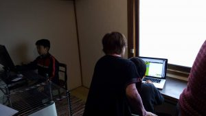
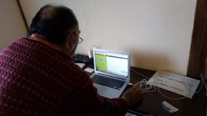
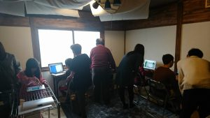
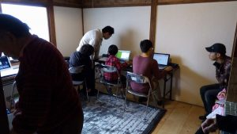

投稿日：2017年11月2日
参加者
Ninjya5名、メンター4名（メンター経験者2名）
今回は、コーダー道場札幌への参加経験者や自宅で保護者さんと自学しているNinjyaさんがメインでした
”塾や教室ではなく‥‥”
ひいおばあちゃんと一緒に参加してくれたNinjyaさんもいらっしゃいました。地域に草の根的に浸透していくには欠かすことができない光景がありました。
ツール／やった内容の反省点
Hour of Code（Code MonkyやMine Craftなど）
未経験の方も、ご家庭でも簡単に自学できるので是非。
Scratch
スタートアップには、マンツーマンでの対応が必要だと感じました。また、段階に応じて、Scratch.Jrで子どもと一緒に遊ぶことができるように、タッチ画面対応のレンタルPCもあるとメンタリングできる幅が広がると感じました。
想定していなかった（できていなかった）ことが多々起きて、全体を俯瞰して運営することができなかったのが、主催者としての反省点です。（メンターさんにもご負担をかけてしまいました。）
次回改善点と今後の展望
開催後、協力して頂いたメンターのみなさんから様々なご意見をいただきました。
机の配置についてなど、環境的に改善すべき点もあることがわかりました。プログラミング知識や技術だけではなく、取り組みやすいより良い環境を整備することなどメンターの果たせる仕事は色々とあります。
また、キャンセル待ちとさせて頂いた方が多くいらっしゃいました。今後の課題の一つとして、定員数の増員／開催回数の増加ができるよう画策していきます。そして、最終的には”平日の14:30〜18:00常時開催（寺子屋）！！”を目標としています。
プログラミングもそうなのですが、ゴールが明確に見えていれば、それを実現する術は必ずあります。そのタイミングがくるように、その状況が生まれるように形を整えていきたいと思います。
多くの方に支援していただきました。
レンタルPC、長机や椅子、駐車場を快く提供してくださった近隣住民の方々。そして、70歳を過ぎてプログラミング（Hour of Code）に初挑戦してくれたメンターの藤本さん。どれか一つ欠けても快適に運営することはできませんでした。
また、今回ご参加いただいた保護者の方からもご厚意の寄付をいただきました。メンター募集等に使わせていただきます。ありがとうございます。
初開催を終えて、多くの励ましの御言葉や応援をいただきました。ひとつひとつが道場継続へのモチベーションとなることを実感しています。心より感謝します。
ノートPC〜空手道武仁拳、（株）ヤマネテック
長机＆椅子10脚〜サイクルハウスわたなべ